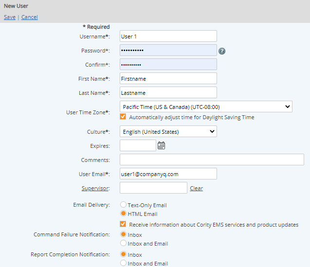

Users are identified in the system by a username and a password. The email address is also important, as it is used to send all system notifications, such as data warnings and task notifications.
Contact information is optional and may be edited by the user later. The security option "User must change password at next login" will force the user to set their password when first logging in, or re-set the password if necessary.
To create a new user:
Select New User or right-click anywhere in the user table and select New.
Enter the required user information:
Username: The username entered for logging on. Must be unique (across all systems).
Authentication Type:
Send email with link: when selected the system sends users a time-sensitive link to their email to set their own password.
No Password: Is selected when the user should only be able to access the system through SSO and are not required to maintain their own password.
Both “Send email with link” and “No Password” cannot be selected at the same time. When one is selected the other will be disabled. You will have to uncheck your selection to select the other one. When either Send email with link or No password is selected, the Password and Confirm textbox are greyed out and disabled. When neither of these options are selected then users can input a value in the Password and Confirm textbox.
Password and Confirm: Initial password. In the next screen you may specify that the user must change the password upon login.
First Name and Last Name: Used to identify the user internally.
User Time Zone: This time zone is used for all task and workflow assignments. Due dates, completion time, etc. will be adjusted, if necessary, to display in the user's time zone.
Culture: The Culture selected in the new user profile determines the appropriate interface and language shown to the user. Included in the localized interface are all standard user interface components (standard text, buttons, links, etc.) as well as such items as date formats, calendars and numeric formats appropriate to the culture. Custom localization can be done for system-specific components, so that system model objects and custom field values will also be presented in the appropriate language. See Supported Cultures for more information.
User email: Email address that will be used for all system notifications.
Supervisor: Option to select another user as this user's Supervisor. (Can be used in system queries.) Editing this field requires Manage Users permission.
Email Delivery: Preferred email option (HTML or text-only). In order for the user to log in and access tasks from a link in an email notification, the HTML email option must be selected.
Receive information about EMS services and product updates: This option allows you to stay up-to-date with product updates and other services. It may be disabled by each user individually, or disabled for the whole system upon request.
Command Failure Notifications: Specify where you want notifications to be delivered when commands issued by the user in the system fail. Failure notifications may be delivered only to the user Inbox, or to both Inbox and Email.
You may specify an expiration date for the user account and add comments, if desired. Supplementary information is optional and may be edited by the user later. 
Enter any supplementary information you want to store in the profile, such as title, phone numbers, company, location and address fields. This information is optional, but may be used for reporting purposes.
Choose security options for the account, if desired. The following security options are available:
User must change password at next login.
User cannot change password.
User’s password does not expire. This overrides the optional security setting for maximum password age, which expires system passwords after a specific time period.
User’s account is locked. This disables login for the user. However, user account is still active.
User rights assigned individually are in addition to any rights granted to the user through their assigned user groups.
Current choices are English (United States), English (United Kingdom), Chinese (Simplified, PRC), French (France), German (Germany), Polish (Poland), Russian (Russia), Spanish, Spanish (Chile), Spanish (Costa Rica), Spanish (El Salvador), Spanish (Guatemala), Spanish (Honduras), and Spanish (Nicaragua).
Spanish refers to Spanish (Mexico).
The display of numeric and date/time settings is in the appropriate culture-dependent format.
Examples of the date/time settings used in different cultures:
Cultures using DD/MM/YYYY date format:
English (United Kingdom) en-GB: 13/06/2003 24-hr time (00:00-23:59)
French (France) fr: 13/06/2003 24-hr time (00:00-23:59)
Spanish (Mexico) es-MX: 13/06/2003 AM/PM
Spanish (Costa Rica) es-CR: 13/06/2003 AM/PM
Spanish (El Salvador) es-SV: 13/06/2003 AM/PM
Spanish (Guatemala) es-GT: 13/06/2003 AM/PM
Spanish (Honduras) es-HN: 13/06/2003 AM/PM
Spanish (Nicaragua) es-NI: 13/06/2003 AM/PM
Cultures using DD.MM.YYYY date format:
German (Germany) de: 13.06.2003 24-hr time (00:00-23:59)
Polish (Poland) pl: 13.06.2003 24-hr time (00:00-23:59)
Russian (Russia) ru-RU: 13.06.2003 24-hr time (00:00-23:59)
Cultures using MM/DD/YYYY date format:
English (United States) en-US: 06/13/2003 AM/PM
Cultures using YYYY/MM/DD date format:
Chinese (Simplified, PRC) zh-CN: 2003/06/13 24-hr time (00:00-23:59)
Cultures using DD-MM-YYYY date format:
Spanish (Chile) es-CL: 13-06-2003 24-hr time (00:00-23:59)
Examples of the number formats (decimal separator) used in different cultures:
Cultures using a dot ( . ) as a decimal separator:
English (United States) en-US: 22.5
Chinese (Simplified, PRC) zh-CN: 22.5
English (United Kingdom) en-GB: 22.5
Spanish (Mexico) es-MX: 22.5
Spanish (El Salvador) es-SV: 22.5
Spanish (Guatemala) es-GT: 22.5
Spanish (Honduras) es-HN: 22.5
Spanish (Nicaragua) es-NI: 22.5
Cultures using a comma ( , ) as a decimal separator:
French (France) fr: 22,5
German (Germany) de: 22,5
Polish (Poland) pl: 22,5
Russian (Russia) ru-RU: 22,5
Spanish (Costa Rica) es-CR: 22,5
Spanish (Chile) es-CL: 22,5